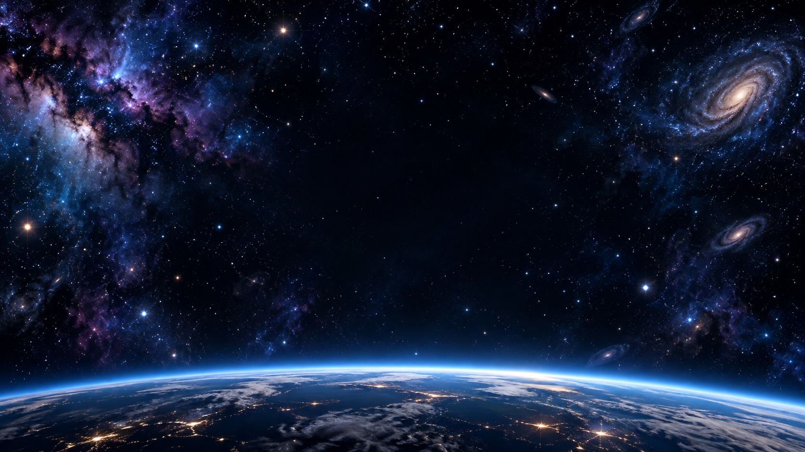
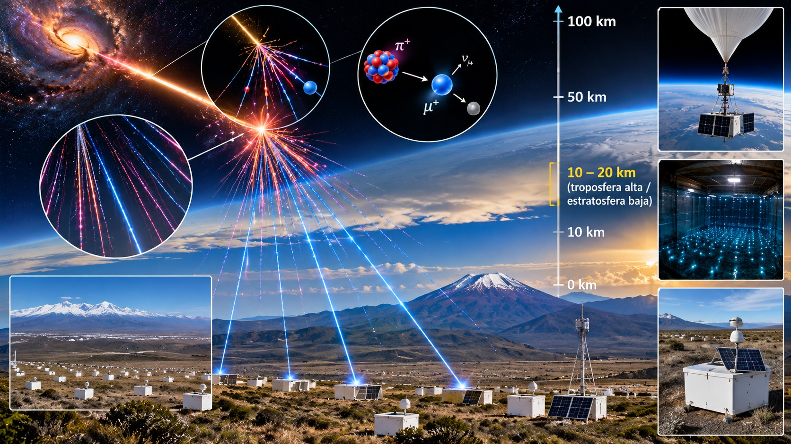

Charla de divulgación científica
Del universo a la vida cotidiana: trenes, muones, GPS y PET
Escuela Normal de Baranoa · Grados 10.°, 11.° y ciclo complementario
Una pregunta que cambia todo
Imagina dos observadores: uno en un tren y otro en el andén.
¿Medirán lo mismo si la luz viaja entre dos espejos?
1687
Newton
Mecánica clásica
1865
Maxwell
La luz como onda electromagnética
1887
Michelson y Morley
No detectan el «viento del éter»
1905
Einstein
Relatividad especial
La física clásica funciona muy bien a velocidades cotidianas.
Cerca de la velocidad de la luz, nuestras intuiciones fallan.
La relatividad especial estudia sistemas inerciales.
1
Las leyes de la física son iguales en todos los sistemas inerciales.
2
La velocidad de la luz en el vacío es la misma para todo observador inercial.
c ≈ 3 × 10⁸ m/s
Valor exacto: 299 792 458 m/s
Tiempo propio del reloj
Δt₀ = 2L / c
Dentro del tren la luz sube y baja en vertical. Desde el andén el recorrido es diagonal, y ambos miden la misma rapidez de la luz.
v·Δt/2: lo que avanza el reloj
L: la separación de los espejos
c·Δt/2: lo que recorre la luz
1 · En el reloj
L = c·Δt₀ / 2
2 · Pitágoras
(cΔt/2)² = (vΔt/2)² + L²
3 · Despejando Δt
Δt = Δt₀ / √(1 − v²/c²)
Para el observador externo, el recorrido de la luz es más largo. Como la rapidez de la luz es la misma:
Δt = γ Δt₀,
γ =
1
√(1 − v²/c²)
Idea clave
El intervalo medido por el observador que ve el reloj moverse es mayor que el tiempo propio entre esos eventos.
Ejemplo a 0,8 c
Con γ = 5/3, un intervalo de 3 s en el reloj del tren se mide como 5 s desde el andén.
En la dirección del movimiento
L = L₀ / γ
| Velocidad | γ | ¿Qué pasa? |
|---|---|---|
| 0,1 c | 1,005 | Casi nada |
| 0,5 c | 1,155 | Efecto de 15 % |
| 0,8 c | 1,667 | Un reloj atrasa 40 % |
| 0,99 c | 7,09 | 1 s se mide como 7 s |
| 0,999 c | 22,4 | Los muones |
2,2 µs
vida media propia
≈ 660 m
recorridos a casi c, sin dilatación

Desde la Tierra
La vida media del muón se dilata: de 2,2 µs a unos 49 µs.
Desde el muón
La atmósfera se contrae en la dirección del movimiento: de 15 km a unos 0,67 km.
Conclusión
Ambas descripciones son compatibles. Con v = 0,999 c, γ ≈ 22.
Mueve los deslizadores y mira cómo cambian los resultados.
Reloj de luz
Cambia v y observa cómo se estira cada tick.
Contracción de la longitud
Elige L₀ y calcula la longitud que mide otro observador.
Muones
Compara 150 muones con y sin dilatación del tiempo.
Relojes del GPS
Activa cada efecto relativista y mide el error acumulado.
1
Los satélites transmiten señales con su posición y hora.
2
El receptor compara tiempos de llegada de varias señales.
3
Con al menos cuatro satélites estima posición y reloj.
d ≈ c · Δt
Un ejemplo
Si la señal tarda 0,07 s, ha recorrido aproximadamente 21 000 km.
La idea fundamental
Un error diminuto en el tiempo puede producir un error importante en la posición calculada.
Relatividad especial
−7 µs/día
El movimiento atrasa los relojes satelitales.
Relatividad general
+45 µs/día
La gravedad más débil los adelanta.
Efecto neto
+38 µs/día
Adelantan respecto a relojes terrestres.
Valores aproximados. Las tres barras usan la misma escala; la línea blanca marca cero.
≈ 11 km
de error acumulado por día: 38 µs × 300 000 km/s
Transporte, aviación y navegación marítima
Agricultura de precisión y cartografía
Sincronización de telecomunicaciones y redes eléctricas
Geodesia y mediciones científicas
1
PET significa tomografía por emisión de positrones.
2
Muestra la distribución de un trazador y la actividad metabólica.
3
Se usa, entre otros fines, para detectar y evaluar algunos cánceres.
1
El radiofármaco
Se administra FDG marcada con flúor-18, en dosis pequeña y controlada.
Los tejidos la captan según su actividad.
2
Positrón y electrón
El flúor-18 emite un positrón que interactúa con un electrón.
Se producen dos fotones de 511 keV, en direcciones casi opuestas.
3
Detectar coincidencias
Los detectores buscan dos fotones simultáneos: una línea de respuesta.
Muchas coincidencias permiten reconstruir una distribución 3D.
4
Construir la imagen
Un computador reconstruye la distribución del trazador.
La interpretación depende del contexto clínico.
e⁺ + e⁻ → γ + γ
Masa-energía
La masa del positrón y del electrón se convierte en energía: cada fotón lleva 511 keV, la energía en reposo de un electrón (m·c²).
Dos fotones, una línea
Salen en direcciones casi opuestas; cuando dos detectores los registran a la vez, trazan una línea de respuesta.
PET es principalmente una técnica de diagnóstico y seguimiento.
La aniquilación electrón-positrón conecta la imagen con masa-energía.
La radioterapia con haces de partículas es otra aplicación de aceleradores y física moderna.
Respuesta corta
No directamente: la relatividad hace posibles las herramientas, y el equipo médico decide el tratamiento.
Aceleradores
Partículas a velocidades cercanas a c.
Física de altas energías
Energía y masa en colisiones.
Astrofísica
Partículas cósmicas y objetos compactos.
Relatividad general
Esencial para describir la gravedad a gran escala.
Un protón en el LHC
γ ≈ 7 000
Su reloj corre unas 7 000 veces más lento que el del laboratorio, a una rapidez de 0,99999999 c.
1
El movimiento relativo cambia las mediciones de tiempo y longitud.
2
La relatividad es necesaria para el funcionamiento preciso del GPS.
3
La física de partículas y la medicina moderna se benefician de estas ideas.
1
¿Por qué un observador externo mide más tiempo en el reloj de luz móvil?
2
¿Qué dos efectos relativistas se combinan en el GPS?
3
¿Qué detecta realmente un escáner PET?
Mini-reto
Una astronauta viaja a 0,8 c durante 6 años medidos en su reloj.
¿Cuántos años pasan en la Tierra?
Pista: calcula γ con v = 0,8 c.
Para practicar: simuladores interactivos de esta charla